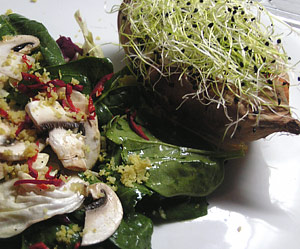

Süsskartoffeln mit Salat
4 von 6Süsskartoffeln samt Schale im Ofen ca. 25 Minuten backen. Die Schale aufschneiden, mit Kräuterquark füllen, Zwiebelsprossen darüber verteilen. Mit einem Salat anrichten.

Süsskartoffeln samt Schale im Ofen ca. 25 Minuten backen. Die Schale aufschneiden, mit Kräuterquark füllen, Zwiebelsprossen darüber verteilen. Mit einem Salat anrichten.

Montagsplausch Nr. 138. Der Abend hiess «Süsskartoffel».